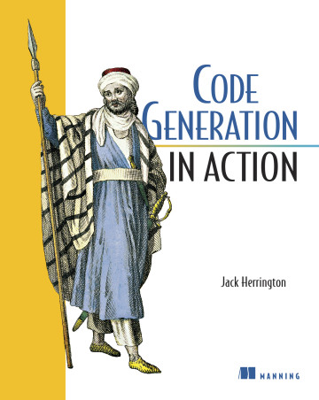

<!doctype html>
<html lang="en">
    <head>
        <meta charset="utf-8" />
        <meta
            name="viewport"
            content="width=device-width, initial-scale=1.0, maximum-scale=1.0, user-scalable=no"
        />

        <title>reveal.js</title>

        <link rel="stylesheet" href="dist/reset.css" />
        <link rel="stylesheet" href="dist/reveal.css" />
        <link rel="stylesheet" href="dist/theme/black.css" />

        <!-- Theme used for syntax highlighted code -->
        <link rel="stylesheet" href="plugin/highlight/monokai.css" />
    </head>
    <body>
        <div class="reveal">
            <div class="slides">
                <section
                    data-markdown
                    data-background-image="bg_1600x900-06.jpg"
                >
                    <script type="text/template">
                        ---
                        <!-- .slide: data-background-image="bg_1600x900-10.jpg" -->
                        **Emmanuel Pinault**

                        ## From Experiment to Production
                        ### The Elixir Tooling Journey

                        4 Layers, One Ecosystem, Endless Possibilities
                        ---
                        ## About Me

                        - **@epinault** on GitHub
                        - Elixir since 2017
                        - **Podium** - 4+ years, 80+ Elixir services in production, 5+ OSS projects
                        - **OSS Maintainer** - Hammer, Geocoder, BEAM community projects

                        ---

                        ## The Bold Claim

                        ### Your typical day involves:

                        - 🐍 **Python** for data exploration (or AI these days)
                        - 💻 **Bash/HCL** for deployment scripts
                        - 🦀 **Go/Rust** for performance-critical services
                        - 🟨 **JavaScript** for web frontends/applications

                        ### Each with different syntax, tooling, and mental models

                        **Elixir can handle all of these contexts**

                        ---

                        ## Python/Ruby

                        ### Great for simple scripts
                        - ✅ **Quick to write**
                        - ✅ **Readable syntax**

                        ### But struggles with...
                        - ❌ **Concurrency is painful** (GIL limitations)
                        - ❌ **Dependency hell** for team sharing
                        - ❌ **No type safety** - Silent failures from type mismatches

                        ---

                        ## JavaScript/Node.js

                        ### Great for web-familiar teams
                        - ✅ **Fast prototyping**
                        - ✅ **JSON handling**

                        ### But struggles with...
                        - ❌ **Callback complexity** for concurrent tasks
                        - ❌ **Limited system integration**
                        - ❌ **Fragile ecosystem** (left-pad incident, dependency bloat)

                        ---

                        ## Go/Rust for Scripts

                        ### Great for performance
                        - ✅ **Excellent concurrency**
                        - ✅ **Great performance**

                        ### But struggles with...
                        - ❌ **Slow development cycle** (compile, test, iterate)
                        - ❌ **Not ideal for quick scripts**
                        - ❌ **Verbose for simple tasks**

                        ---

                        ## Bash/Shell for Scripts

                        ### Great for system tasks
                        - ✅ **System integration**
                        - ✅ **Ubiquitous**

                        ### But struggles with...
                        - ❌ **No data structures**
                        - ❌ **Error handling nightmare**
                        - ❌ **Complex scripts are hard to maintain and read**
                        - ❌ **Platform compatibility issues**

                        ---

                        ## The Result

                        ### Multiple tools = Multiple problems
                        - 🔄 **Context switching** between languages
                        - 📚 **Different ecosystems** to learn and maintain
                        - 🔧 **No single solution** that handles all use cases well
                        - ⚡ **Slow iteration** when you need the "wrong" tool

                        **What if there was a better way?**

                        ---

                        ## The Elixir Way

                        - 🎯 Coherent ecosystem
                        - 🔄 Natural progression
                        - 📈 Gradual complexity
                        - ⚡ Fast feedback loops

                        ---

                        ## The Journey

                        ### 🔬 Livebook → ⚡ Scripts → 🏗️ Simple App → 🌐 Phoenix

                        ---

                        <div class="container">
                        <div class="col">

                        ### 🔬 **Livebook**
                        Explore & Prototype

                        ### ⚡ **Scripts**
                        Automate & Share

                        </div>
                        <div class="col">

                        ### 🏗️ **Simple App**
                        Structure & Scale

                        ### 🌐 **Phoenix**
                        Deploy & Serve

                        </div>
                        </div>

                        ---

                        # Layer 1: Livebook

                        ---

                        ## Livebook

                        ### Traditional Use Cases
                        - 📓 Interactive development
                        - 🧪 Data exploration
                        - 📊 Quick visualizations

                        ---

                        ## Livebook Beyond Prototyping

                        ### Production Use Cases
                        - 📋 **Production Runbooks** - Incident response
                        - 📈 **Metric Reporting** - Migration health checks
                        - 🔍 **Data Quality Analysis** - Data quality dashboards
                        - 🌐 **API Testing** - "Postman-like" testing without GUI

                        ---

                        # Live Demo

                        *Livebook operational insights*

                        ---

                        ## Livebook Perfect for

                        - 🚀 **Zero setup friction** - Browser-based, immediate value
                        - 🤝 **Operations collaboration** - Non-technical teams execute procedures
                        - 📝 **Living runbooks** - Executable operational documentation
                        - 💡 **Data exploration** - Interactive analysis and visualization
                        - 🔍 **System health** - analysis and monitoring
                        - 📋 **Production runbooks and incident response**
                        - 📊 **Migration health checks and reporting**

                        ---

                        # Layer 2: Scripts

                        ---

                        <div style="text-align: center;">
                        
                        </div>

                        ---

                        ### Common Developer Pain Points:

                        - 🔄 **Repetitive tasks** across multiple repositories
                        - 🏗️ **CI/CD pipeline complexity** with multiple languages/tools
                        - 🛠️ **One-off automation** that's too small for full applications
                        - 📊 **Domain-specific tooling** that doesn't exist elsewhere

                        ---

                        ## Elixir Scripts Excel At:

                        - ⚡ **Fast feedback loops** - Write, test, run immediately
                        - 🧰 **Rich standard library** - HTTP, JSON, etc built-in
                        - 📦 **Zero dependencies** - Self-contained automation
                        - 🔀 **Cross-platform** - Works anywhere Elixir runs
                        - 🚀 **Effortless concurrency** - Handle thousands of parallel tasks naturally (Async Task, Flow, etc.)

                        ---

                        # Live Demo

                        ## From Pain Point to Automation in 5 Minutes

                        ---

                        ## 2025 Distribution Options

                        | Tool | Best For | Requires Erlang? | File Size |
                        |------|----------|------------------|-----------|
                        | **Plain** | No distribution | ✅ Yes | Small |
                        | **Escript** | Team sharing | ✅ Yes | Small |
                        | **Bakeware** | Self-contained | ❌ No | Medium |
                        | **Burrito** | True standalone | ❌ No | Large |

                        ### When to use each:
                        - **Plain/escript** - Quick team utilities, CI/CD scripts
                        - **Burrito** - Complete independence

                        ---

                        ## Scripts Perfect for

                        - 🏗️ **CI/CD pipelines** - Deploy, test, build automation across repos
                        - 🔄 **Daily development tasks** - Config sync, dependency updates, code generation
                        - 🧰 **Domain-specific tooling** - Migration checkers, API clients, custom validators
                        - 📦 **Team productivity** - Shared utilities that eliminate repetitive work

                        ---

                        ### Unique Advantages:

                        - ⚡ **No framework overhead** - Pure Elixir, immediate execution
                        - 🎯 **Exact solution fit** - Build precisely what your team needs
                        - 🔀 **Multi-repo orchestration** - Handle complex workflows across services

                        ---

                        # Layer 3: Simple App

                        ## Structured Development & Background Jobs

                        ---

                        ### Key Features & Use Cases:

                        - **Long-running processes** - Stays alive, handles state
                        - **Background processing** - Reliable job queues with Oban, Task.async, Flow, etc.
                        - **Full Application lifecycle** - Supervision trees, fault tolerance
                        - **Database integration with Ecto** - Persistent data storage

                        ---

                        ### Key Features & Use Cases (continued)

                        - **Configuration management** - Environment-based config
                        - **Comprehensive testing** - Unit, integration, property tests
                        - **Embedded systems** - Hardware integration, embedded devices (Nerves)

                        ---

                        ### Perfect For:

                        - 📐 **Scalable architecture** - Proper separation of concerns
                        - 🧪 **Testable components** - Each module tested in isolation
                        - 🔧 **Reusable modules** - Share logic across applications

                        ---

                        # Live Demo

                        ## A simple agent system with a background job in minutes

                        ---

                        # Layer 4: Full Applications & Real-time Features

                        ---

                        ### What Phoenix Adds & Performance:

                        **Core Features:**
                        - **Web interface** - HTTP endpoints, routing, controllers
                        - **Real-time features** - LiveView, WebSockets, Channels
                        - **User authentication** - Built-in auth, sessions, CSRF protection
                        - **Asset pipeline** - CSS/JS compilation, optimization
                        - **API capabilities** - REST/GraphQL endpoints, JSON APIs
                        - **Deployment tooling** - Releases, clustering, monitoring

                        ---

                        ### What Phoenix Adds & Performance (continued)

                        **Real-world Results:**
                        - 🚀 **"Half the time, half the people"** - Internal app development
                        - 📈 **Millions of WebSocket connections** on a single server
                        - 🛡️ **Fault-isolated components** keep apps running
                        - ⚡ **1-2 minutes** to implement new features after setup

                        ---

                        ## The Complete Journey

                        ### Our Operation Review Agent Evolution:
                        - 🔬 **Livebook:** Interactive prototype + operational exploration
                        - ⚡ **Script:** CLI automation for scheduled reviews
                        - 🏗️ **Simple App:** Background jobs + proper testing
                        - 🌐 **Phoenix:** Real-time dashboard for operations team

                        **One core concept, four different contexts**

                        ---

                        ## When to Use Each Layer

                        | Layer | Simplicity | Dev Speed | Cost | Complexity |
                        |-------|------------|-----------|------|------------|
                        | **🔬 Livebook** | Very High | Minutes | Very Low | Very Low |
                        | **⚡ Scripts** | High | Minutes/hours | Low | Low |
                        | **🏗️ Simple App** | Medium | Days | Medium | Medium |
                        | **🌐 Phoenix** | Low | Weeks | High | High |

                        **Choose based on your current need, not your final destination**

                        ---

                        ## Performance Comparison

                        ### When Performance Matters:
                        - **Livebook:** Great for exploration, not production loads
                        - **Scripts:** Excellent for batch processing
                        - **Simple App/Phoenix App:** Optimal for background jobs and APIs

                        **Rule of thumb:** Start with simplicity, optimize when needed

                        ---

                        ## Team Adoption

                        ### Introducing These Patterns:
                        1. Start with Livebook for team knowledge sharing
                        2. Automate common tasks with scripts
                        3. Extract reusable logic into libraries (opinionated ones)
                        4. Build user-facing features in Phoenix

                        ---

                        ## Your Next Steps

                        ### Start Where You Are:
                        - 💡 **Got an idea?** → Fire up Livebook, start exploring
                        - 🔧 **Need automation?** → Write a script, solve the immediate problem
                        - 🏗️ **Building a service?** → Structure it as a library from day one
                        - 👥 **Want users?** → Phoenix + LiveView for modern web apps

                        **Remember: Evolution over revolution**

                        ---

                        ## Thank You!

                        ### Resources:
                        - 🔗 **Demo Repository:** github.com/epinault/elixir-tooling-journey
                        - 📊 **Slides:** Available at the repo above
                        - 📚 [Code Generation in Action](https://www.manning.com/books/code-generation-in-action)

                        ### Connect:
                        - 🐦 **GitHub:** @epinault
                        - 💼 **LinkedIn:** Emmanuel Pinault

                        ---

                        ## Questions?

                        ---
                    </script>
                </section>
            </div>
        </div>

        <style>
            .container {
                display: flex;
                justify-content: space-around;
                align-items: flex-start;
            }

            .col {
                flex: 1;
                margin: 0 10px;
            }

            .reveal pre code {
                font-size: 0.55em;
                line-height: 1.2;
            }

            .reveal table {
                font-size: 0.8em;
            }

            .reveal h1,
            .reveal h2,
            .reveal h3 {
                text-transform: none;
            }

            .reveal .slides section {
                text-align: left;
            }

            .reveal .slides section[data-background*="title"] {
                text-align: center;
            }

            .reveal ul,
            .reveal ol {
                margin-left: 1em;
            }
        </style>
        <script src="dist/reveal.js"></script>
        <script src="plugin/notes/notes.js"></script>
        <script src="plugin/markdown/markdown.js"></script>
        <script src="plugin/highlight/highlight.js"></script>
        <script>
            // More info about initialization & config:
            // - https://revealjs.com/initialization/
            // - https://revealjs.com/config/
            Reveal.initialize({
                hash: true,
                progress: true,
                controls: true,
                // Learn about plugins: https://revealjs.com/plugins/
                plugins: [RevealMarkdown, RevealHighlight, RevealNotes],
            });
        </script>
    </body>
</html>
